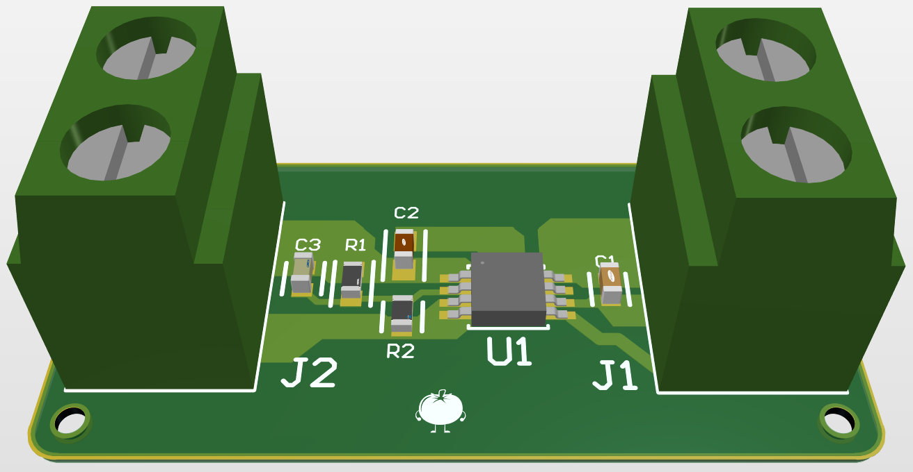
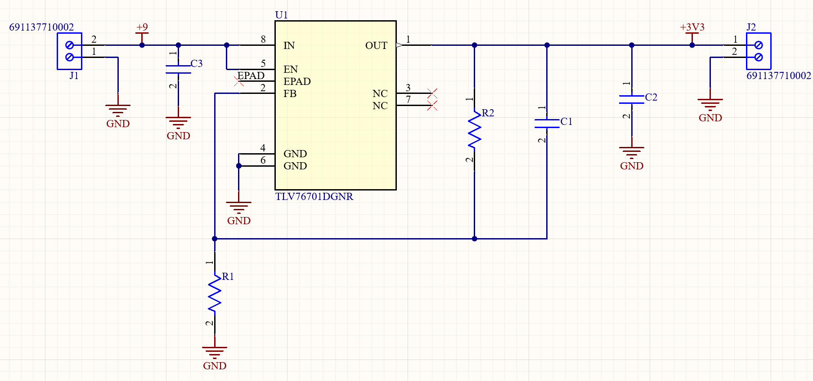
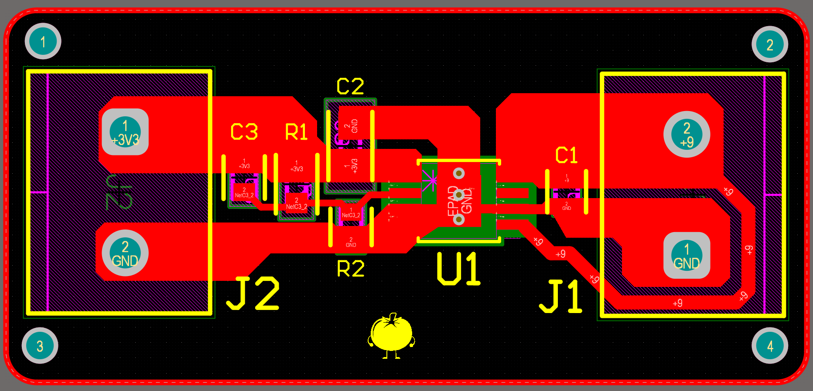
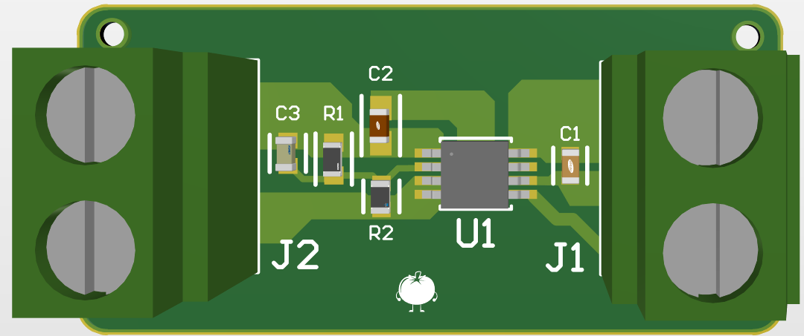

This Low Dropout (LDO) regulator module was created as an onboarding design project for my school's robotics team. Built around the TLV76701 adjustable linear regulator, the board steps down an unregulated 9V input down to a stable 3.3V output to safely power low-voltage logic components and microcontrollers.


All component values and ratings were selected strictly according to datasheet recommendations to ensure operating stability
Capacitors: Multi-Layer Ceramic Capacitors (MLCC) with X7R dielectric for stable capacitance across variable temperatures.
Resistors (R1, R2): Surface-mount thick film resistors used in the feedback network to set the output voltage.
Connectors (J1, J2): Terminal blocks for robust wire connections at the 9V input and 3.3V output stages.
The layout was designed to handle heat dissipation and maintain signal integrity
Power & Ground: Connected using large copper pours to lower trace resistance, support higher currents, and manage thermal dissipation.
Signal Traces: Routed with standard 0.3 mm trace widths for feedback and enable signals.

